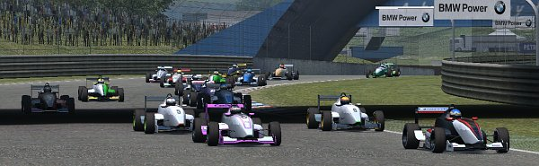
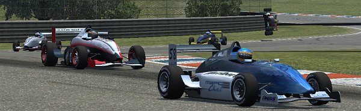
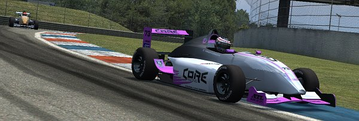
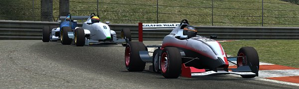
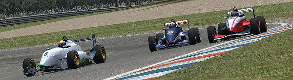
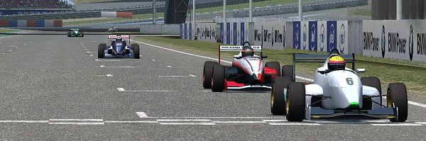

|
Initial race for Speedsims' FOX on the run LFS race series was run at short but fast
Aston Club circuit. One hairpin for each first and last lap and 2 very fast S-bends
are the track's main characteristics and make up for a fine battleground for the agile
FOX open wheelers.
15 mins Qualifying ended up with Oscar Hardwick on pole and K. O'Keefe next to him. Second row was
staffed by Poland's Foxclub, with Adin and
Fordern, with LLM's MaukaZ and GRAND's Flame right behind. Speedsims' DaveO got 7th, his teammate
Cholerix 9th - and Killer Race Team's Masato stuck in between that Speedsims team sandwich.
Top 10 were completed by Masato's team mate Zombie

First lap into the race was to sort out basic race order, and with all the traffic close
by, it was kind of a surprise cars passed T1 without someone flying off. The debris
started flying only right after T1, when LLM's Bmxtwins's and Alpinestars' Zay's fight for 12th
position ended with Zay going offtrack, losing control and spinning back to the
track - right in front of approaching TAG's Chris. Next such incident was when DaveO
slipped in 2nd hairpin and t-boned #12, taking both Speedsims team cars out. While
Chris dropped off the race, DaveO ran on, though now on a back position; Cholerix and Zay immediatly
went for pits for
repair and service. Notorious 1st lap pit stopper Masato joined in pitlane, just like
EAR's Crash, who was experiencing major trouble with his simgear equipment and soon
after dropped off the race as well
Up front the race, O'Keef and Oscar Hardwick had switched positions in first turn in
lap 1 already and were now both outrunning the rest of the field. O'Keefe was even
several tenths per second faster than Oscarhardwick each lap and so both drivers never were really
threatened from behind after first lap. Quite different to top 2, there was soon a wild
fight starting for 3rd place - and it was only to end on the finishing line. Adin,
Fordern, Flame and MaukaZ were the ones in that struggle in first half of the race,
changing positions frequently - and starting to do so in lap 2, when Flame benefited
from MaukaZ's scraping of first S-bend's exit wall.

Zombie, Bmxtwins. K.Sheppard, Mustangman and Burnout did all well profit from first
lap's incidents and rushed up to positions 7-11. But while Zombie was rather chasing
the guys on positions 3-6, Bmxtwins was more occupied to make K.Sheppard and
Mustangman stay behind. After 3 laps he was released from that threat only when K.Sheppard
and Mustangman collided in T5 - which promised to become a well popular part of the
track to spin or collide. Bmxtwins' easy time abruptly ended when he went offtrack in lap 6
in 2nd S and afterwards collided with Burnout in T5. Like K.Sheppard, he dropped
down several positions and out of top 10
Meanwhile MaukaZ and Flame kept on fighting for 5th position, with MaukaZ being on the
brighter side at T1 in lap 4. When in front of them Fordern was next to mess up S bend,
they both even got positions 4 and 5, chasing Adin. At lap 7 O'Keefe was 4 secs ahead
of Oscarhardwick, who was 3 secs ahead of Adin. 2 secs behind came MaukaZ and Flame,
with Fordern and Zombie each another 2 secs back. So positions looked pretty much sorted
out up to here...

... that changed when in lap 9 MaukaZ made it back to strike distance behind Adin.
He could pass soon, and Adin had to fight to keep at least Flame behind for now. He
lost that fight on lap 5 straight, and dropped back in front of his teammate Fordern.
For now. 2 laps later on MaukaZ got the S bend rather suboptimal and was passed by Flame,
who took over 3rd position. Team mate or no, Fordern didn't stay behind Adin, but in
lap 12 successfully first attacked for 5th position on straight, and later on in 2nd S
MaukaZ for 4th.

In lap 13 MaukaZ once more messed up in S bend, but this time quite thoroughly, which
caused him to drop out of that fight group for 3rd position and down behind DaveO,
who had slowly worked off his lap 1 incidents' outcome and was now back on 6th position,
only 4 secs behind Adin. That 4 secs proved only to have been be a minor challenge for DaveO
when he was attacking Adin in lap 16, short before pitting for service.
After all had been in pits for service, Oscarhardwick was disconnected from the race,
resulting in O'Keefe to have a 20 sec gap on 2nd position. Which was still to be fought out
by Fordern and Flame. They both changed positions frequently on the next laps, while
DaveO was continuously creeping closer. At lap 23 when Fordern was attacking Flame in T5,
Dave was already clinging to both their cars' exhaust pipes. But when he was just about
to join the fight, he was next to mess up first S, which made him drop back 3 secs.
Fordern and Flame could safely struggle on.

On the other end of the field and with only 5 laps to go, Cholerix had been able to get
close on K.Sheppard and was supported by the BSR driver when that one slipped at being
lapped by fighting FFordern and Flame. Cholerix happily benefited and inherited 10th
position and was looking forward to save it to the finishing line until he slipped as
well in 27th lap and reversed order with K.Sheppard again
Masato's usual strategy to get out of all the fighting by pitting in first lap already
got him in front of Adin when all the mandatory pitstops had been done. Zombie was running
on 7th position, with Adin out of reach and no one close behind. His major challenge
in 2nd half of the race was to lap Zay. Though being right behind the Alpinestars driver's
car in lap 16 already, he only managed to pass in lap 21 and only after Zay slipped.
All other drivers on positions 9-14 had a rather lazy 2nd race half. Burnout had dropped off
the race in pits

DaveO did his best to work off that 3 secs to podium positions, but ran out of laps.
Fordern crossed the finishing line on 2nd position, 0.3 secs ahead of Flame and 1 sec
ahead of DaveO. And 30 secs behind winner O'Keefe. Masato finished 5th, Adin 6th, Zombie
7th. MaukaZ made 8th and last points in the race. For full race result, check
here
|